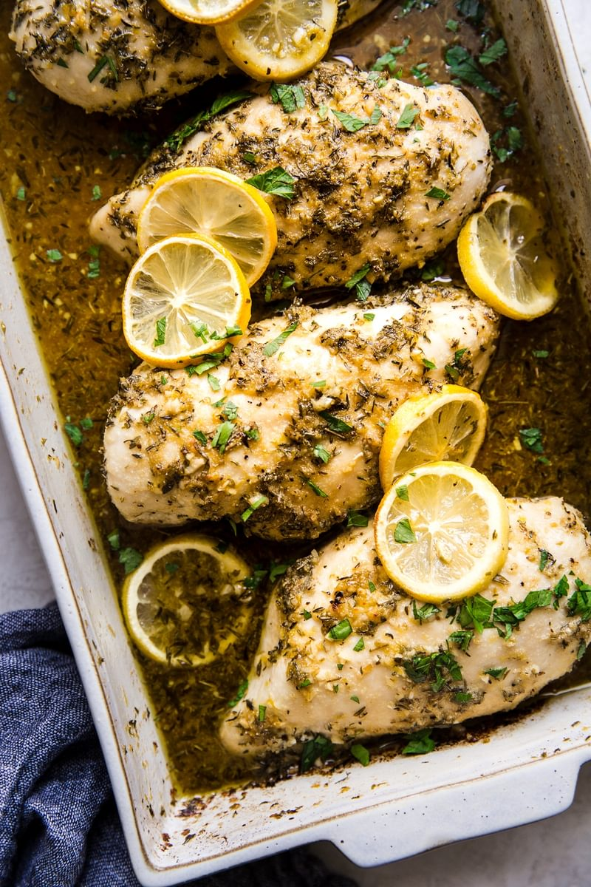

Lemon Chicken

Our easy lemon chicken recipe shines with a sunny, lemony zing.
Garlic and herbs—plus a glug of white wine—mean that these juicy,
tender chicken breasts are as delicious as they are healthy.
A Flavor-Giving Trifecta Makes this the Best Lemon Chicken
Recipe, Ever.
Let’s start with the good news: lean and
protein-packed, boneless, skinless chicken breast is super healthy!
The bad news: boneless, skinless chicken breast is kind of bland!
The solution? Use the chicken breast as a blank canvas for all of
your favorite big flavors, without undermining its’ inherent
healthfulness. Our lemon chicken recipe does all of that thanks to a
few of our favorite big, bright flavors:
- Lemon, three ways. We aren’t messing around—this isn’t just
lemon chicken. It’s LEMON chicken! We use lemon zest,
fresh-squeezed lemon juice and whole lemon slices to give this lemon
chicken recipe all of the citrusy punch that we possibly can.
- Garlic, two ways. We could maybe have called this lemon garlic
chicken, since our recipe calls for both fresh garlic cloves and
(you guessed it) our beloved garlic powder.
- Herbs, herbs
and more herbs. A whole garden’s worth of fragrance and flavor, all
from a few dried herbs that you probably already have in your
pantry.
How To Make Lemon Chicken
Our easy, baked lemon chicken
recipe is healthy, fast, and so, so delicious. The key is coating
the lemon chicken with lots of moisture-giving things, and watching
that internal temp closely so that you don’t over-bake the
chicken.
- Make a lemon chicken marinade. Well, it’s
really more like a rub or a paste, because our lemon chicken recipe
requires no actual marinating (yay!). But basically, we coat the
chicken breasts in a thick, olive oil-based herb paste flavored with
oregano, thyme, garlic powder, salt and pepper.
- Make the
lemon chicken sauce! Stir together all of the zingy things—white
wine, fresh garlic, lemon zest, lemon juice—to make the sauce that
the chicken breasts will bake in. You’ll also use this sauce to
baste the chicken as it bakes, ensuring that these bright flavors
have a chance to be absorbed by the chicken (without having to
actually marinate the chicken).
- Bake! Until you get that
internal temperature reading of 165°F. Then it’s time to dig
in!
Healthy, Flavorful, Easy.
This one really is all of the
things. We hope this healthy lemon chicken recipe felt as
miraculously breezy to you as it does to us. Let us know how it all
went down! Snap a photo of your baked lemon chicken and maybe even a
video of the beautiful people you feed it to.